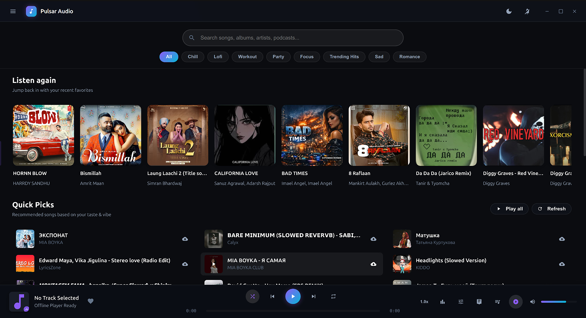
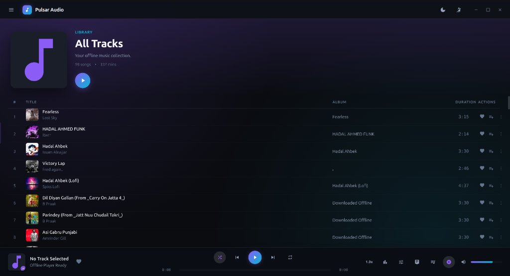

Local music without the cloud.
Bit-perfect desktop playback with a ten-band equalizer and zero telemetry.
Pulsar-Music-Player-1.1.10.AppImage (216.7 MB) and Snap or .deb packages.

Ten bands of hardware-voiced control
Shape acoustic contours in real time across ten frequency bands.
Five workspaces for deep listening
Switch between the track table, navigation drawer, and daylight interface.

Offline library table supporting instant metadata search, custom playlists, and FLAC decoding.
Built for offline disk collections
Local indexing and floating-point playback without user accounts.
Direct 32-bit path
WebAudio routing across FLAC, MP3, WAV, AAC, and OGG.
32-bit PCMLocal mood sorting
Sorts folders into Chill, Focus, and Workout.
Zero networkOffline LRC lyrics
Timed lyrics synced beside the active queue.
LRC v2JSON playlist backups
Portable local backups with zero telemetry.
Local storeDesktop packages
Official Linux and Windows releases.
sudo snap install pulsar-music-player
| Platform | Format | Size | Package |
|---|---|---|---|
| Linux | AppImage | 216.7 MB | AppImage |
| Linux | Snap | 90.6 MB | Snap |
| Debian | Package (.deb) | 145.7 MB | .deb |
| Windows | Installer (.exe) | 162.7 MB | Setup (.exe) |
| Windows | Portable (.exe) | 162.5 MB | Portable (.exe) |
| Windows | AppX | 197.6 MB | AppX |
| Version | Date | Release notes | Assets | Link |
|---|
Community feedback
Post audio setup notes directly to GitHub Issues.
Published reviews
0 publishedNo reviews yet. Test Pulsar Audio locally and open an issue.